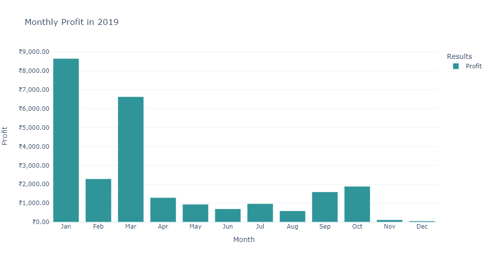
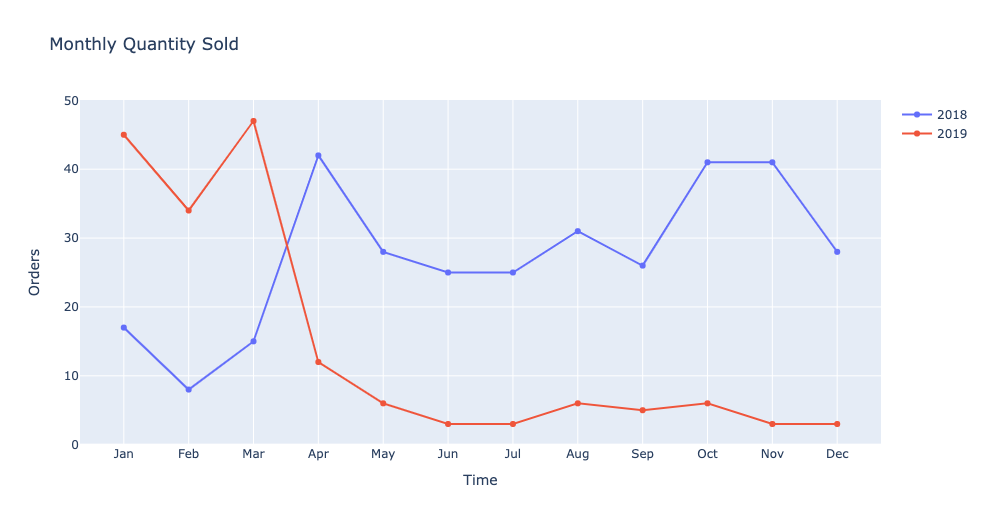
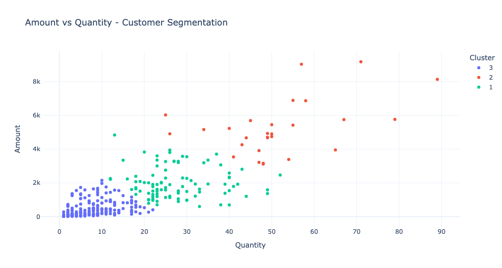
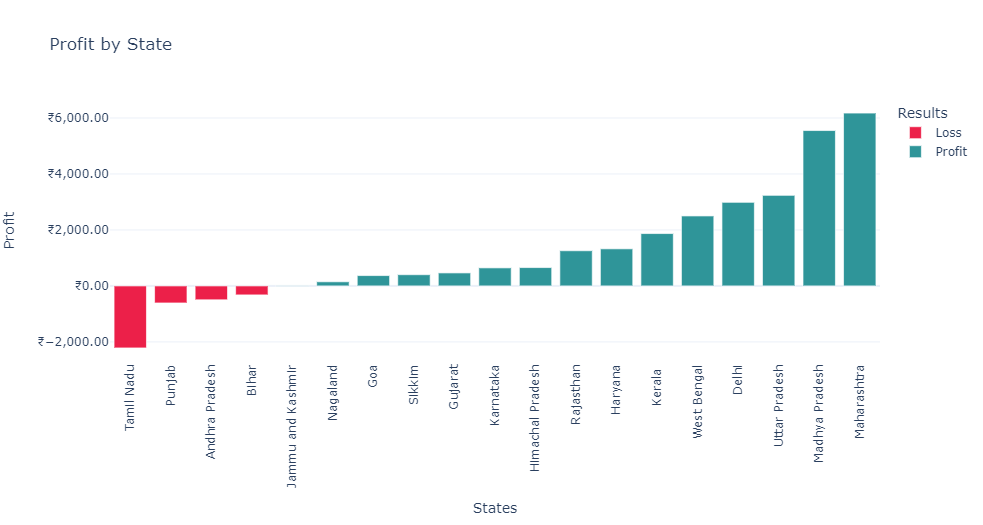
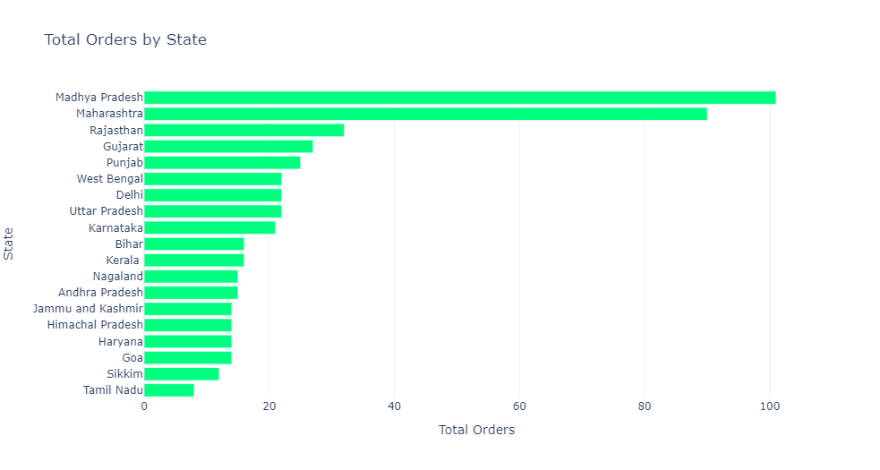
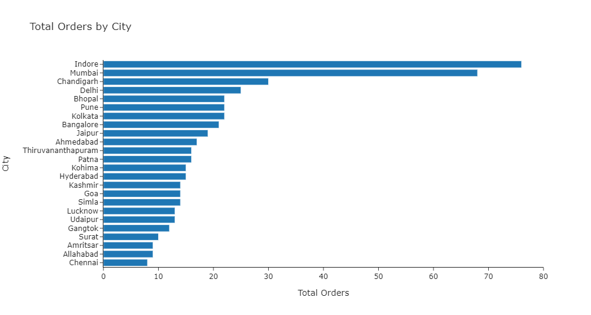
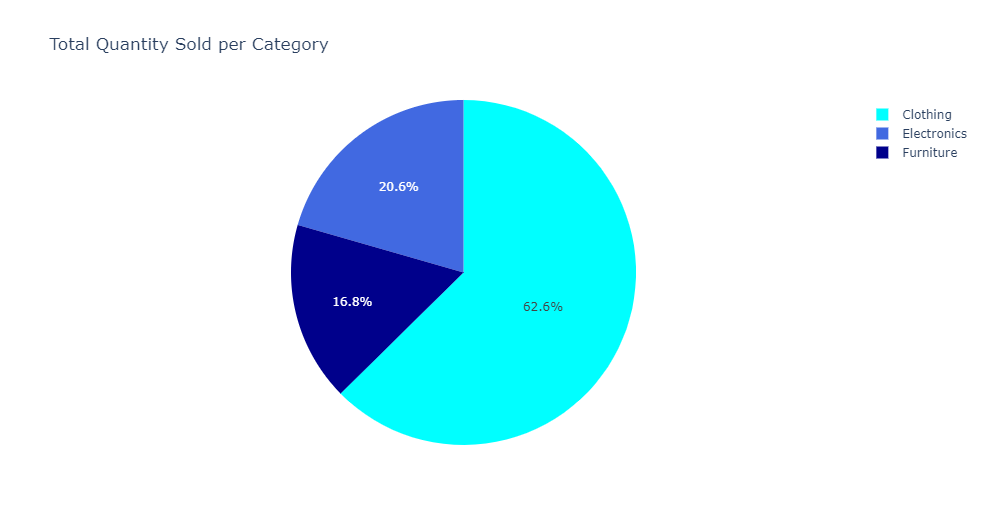
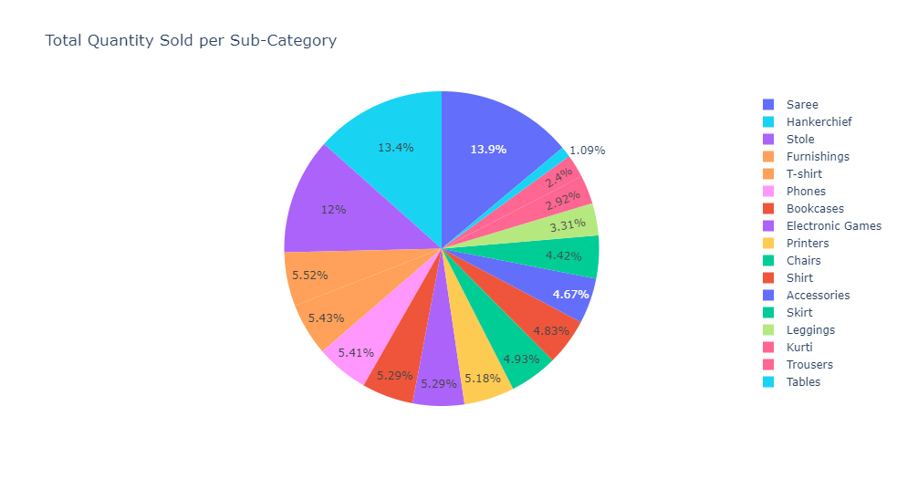
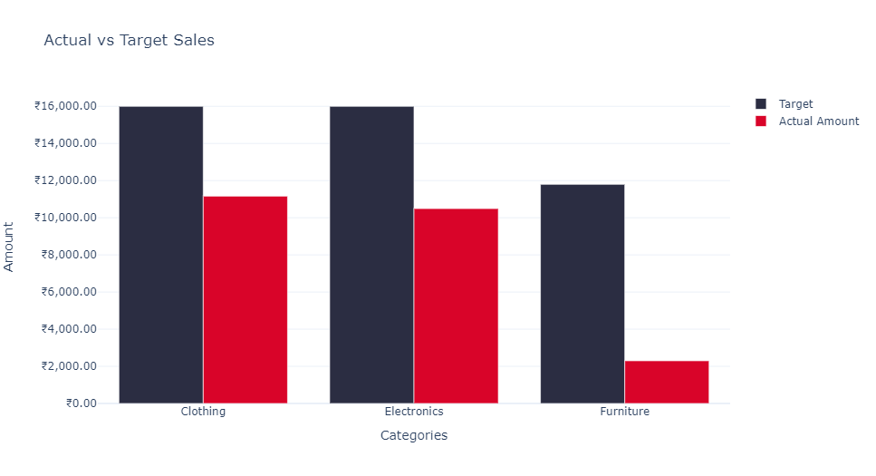

We have loaded the datasets using python scripts on Firebase and SQL. We have parallelly started working on the entire dataset's search and analytics function. We plan to utilize these functions on the partitions; further, we will create and combine the results of all partitions and combine before displaying them to the user. We can further see in the figure above the Profit/Loss generated every month of 2018. So this gives us an idea of which months proved more profitable and which ones incurred a loss. The figure shows that profit is represented by green bars and loss is represented by red bars. We can also see that based on the chart, there is more loss per month than there is profit which says a lot about where the sales are directed.

We used search and analytics function on the partitions, we will create and combine the results of all partitions before displaying them to the user. We can further see in the figure above the Profit/Loss generated every month of 2019. So this bar graph gives us an idea which month was more profitable. So that, we can analyze and compare month wise profits. The figure shows that the profit is represented by green bars. We can see that January had the most profits.
Looking at the segmentation of the customers is not enough, we must know the monthly orders in addition to the profit to see where things went wrong accounting for the losses between April all the way to september. What is strange is seeing how the number of orders goes up relative to the profit going down in the previous model.
We performed a clustering algorithm to cluster different kinds of buyers. So here, segment 1 represents Local Buyers. We can see that Local Buyers are represented by blue color. Local Buyers buy in small quantities, so they buy in small amounts. Segment 2 represents Medium Buyers. They are represented by orange color. They buy in large quantities. Segment 3 represents Occasional Buyers. They are represented by green color. They occasionally buy in random quantities and in random amounts.
We have further analyzed the data statewise. Here we have used States vs Profit plot. We can see that which state has incurred a loss while which state has gained maximum profits. The profits are denoted by green bars while the losses are denoted by red bars. We can see that the state "Tamil nadu" has incurred the maximum loss and the state "Maharashtra" has gained maximum profits.
We are further analyzing number of orders by state. We have displayed a horizontal bar chart for the analytics part. We can see that statewise number of orders are displayed. We can see that the states "Madhya Pradesh" and "Maharashtra" are the two top most states having the maximum orders. The state "Tamil Nadu" have the minimum number of orders. Even though "Madhya Pradesh" has more number of orders than "Maharashtra", the profit of "Maharashtra" is more than "Madhya Pradesh" as shown above.
We are further analyzing number of orders by city. We have displayed a horizontal bar chart for the analytics part. We can see that citywise number of orders are displayed. We can see that the cities "Indore" and "Mumbai" are the two top most states having the maximum orders. The city "Indore" has more orders than "Mumbai" as the state "Madhya Pradesh" has more orders than "Maharashtra".
For this part, we have used pie chart to analyze category wise total orders. So here we can see that the distribution of percentage of orders per category is displayed. From the pie chart we can see that the number of orders for "Clothing" is more than the rest two categories. This means that "Clothing" is in more demand than "Electronics" and "Furniture".
This is a deeper analytics function than the one mentioned above. In this, we have used pie chart as well to analyze sub category wise total orders. We can see that distribution of percentage of orders per sub category is visualized. From the pie chart, we can see that the sub category "Saree" which belongs to the category "Clothing" has the highest percentage of quantities sold. We can see that the sub category "Tables" which belong to the category "Furniture" has the lowest percentage of quantities sold.
For the last part we have used target data vs actual data to compare category wise whether we have accomplished our target or not. From the figure, it is visible that all the categories failed to achieve their targets for the given year. The target bar is represented by dark blue whereas the actual sales bar is represented by red.
